Gastro Pub
frente al mar
Cerveza artesanal, cocina local y la mejor vibra de la isla.
Gastro Pub con vista al mar de Galápagos
Nuestro pub ofrece una experiencia única frente al mar, con vistas privilegiadas que acompañan cada cerveza.
Un espacio de buena vibra donde el sabor y el paisaje se unen para crear momentos inolvidables.
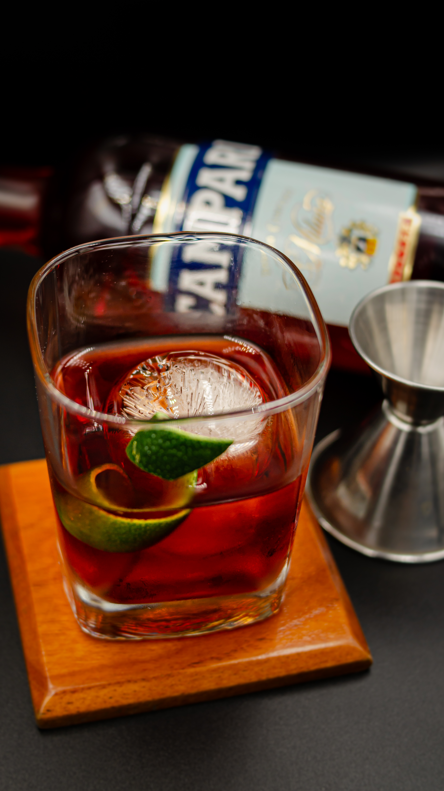
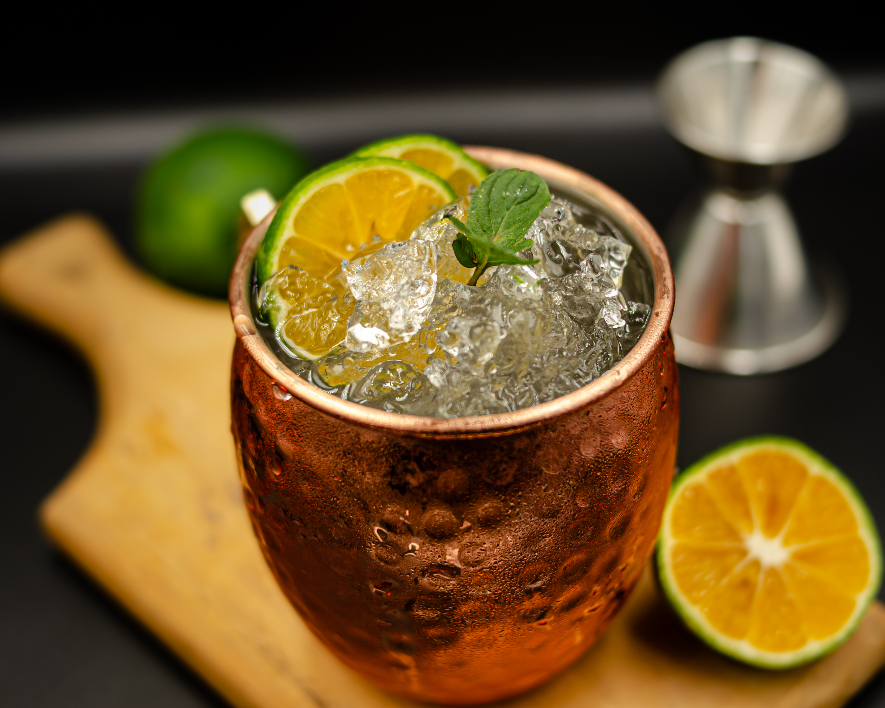
Ambiente único
Nuestro pub ofrece un ambiente vibrante y acogedor, con buena música y energía que invita a quedarse.
Un espacio perfecto para compartir, relajarse y disfrutar entre amigos con la mejor vibra.
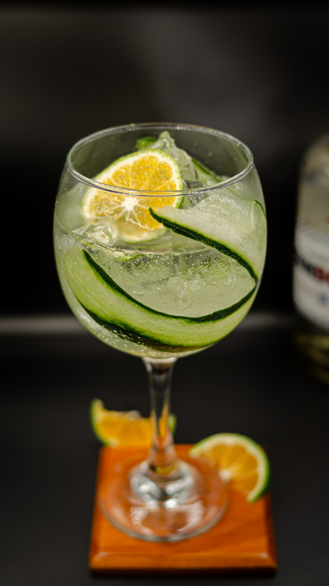
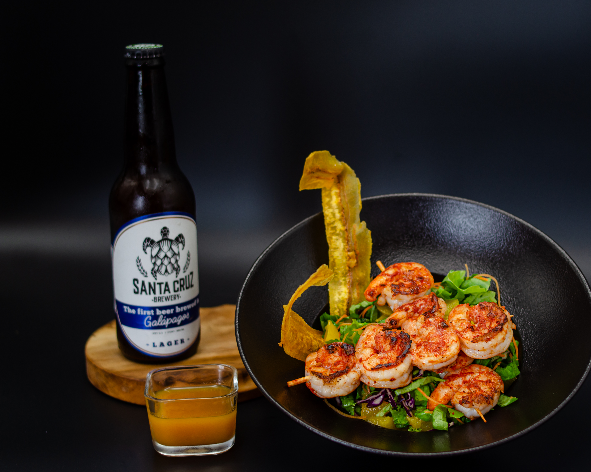
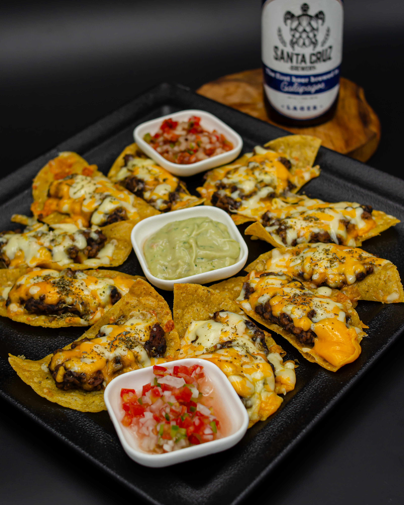
Comida especial
Nuestra cocina resalta sabores de Galápagos con pulpo y pescado frescos, preparados con identidad local.
Platos únicos que conectan el mar con la mesa, perfectos para acompañar nuestras cervezas artesanales.
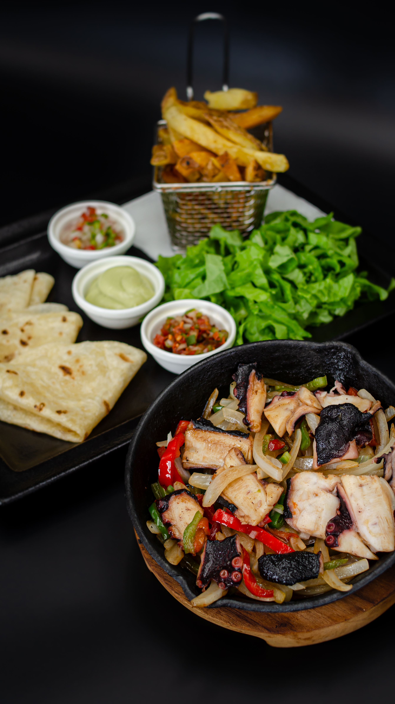
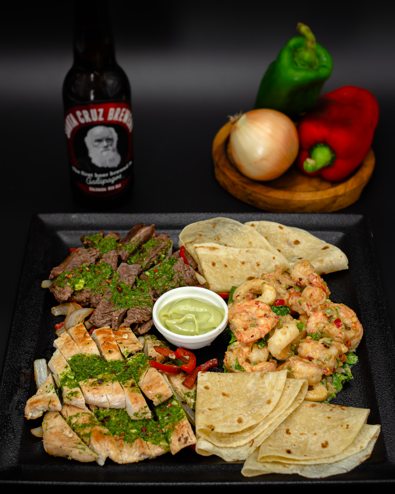
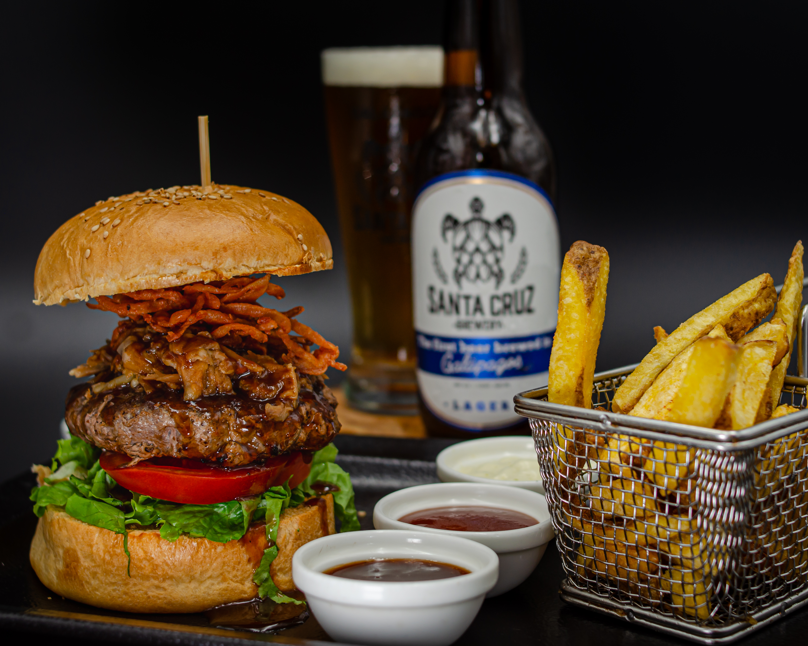
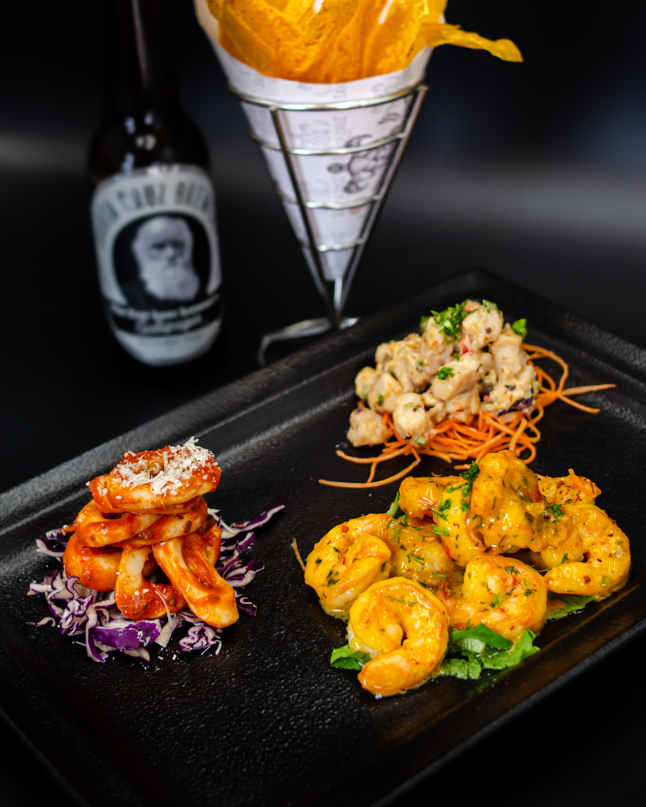
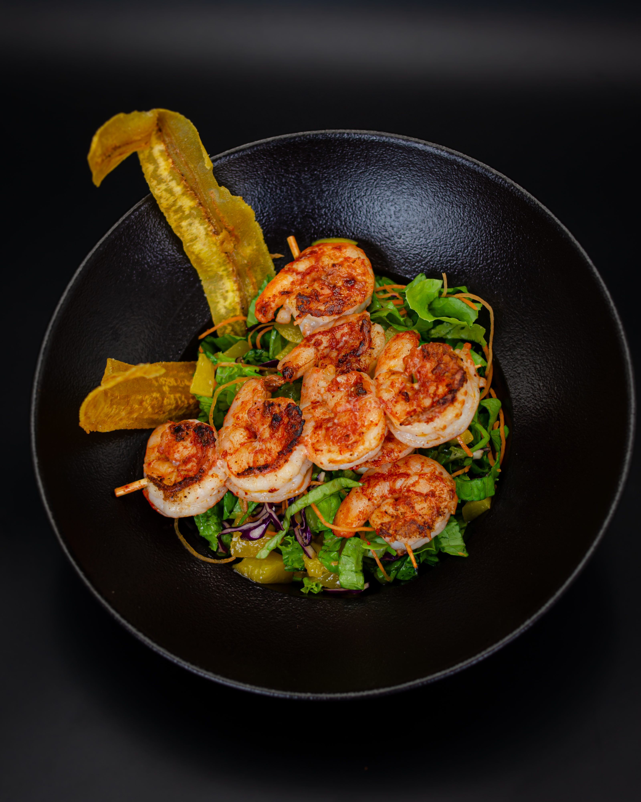
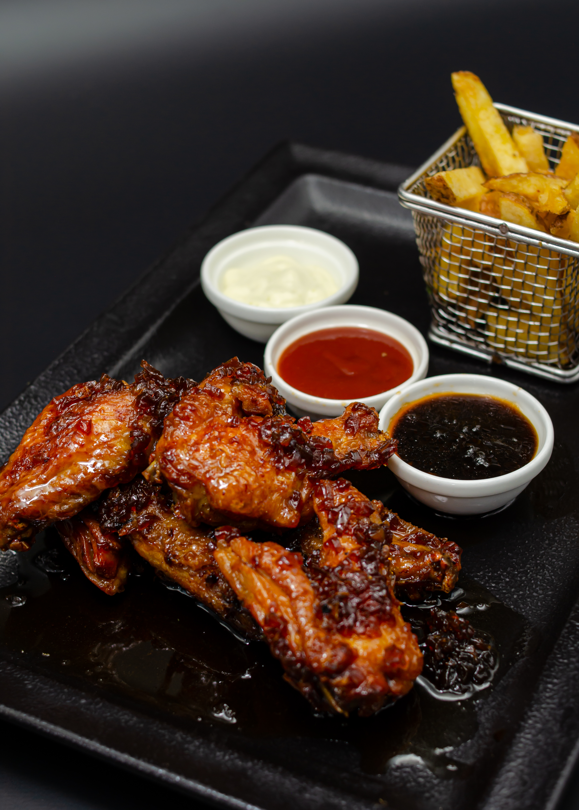
Música en vivo
Disfruta de música en vivo que llena el ambiente de energía y conecta a todos en cada noche.
Bandas y artistas crean el ritmo perfecto para acompañar nuestras cervezas y buena vibra.
Menú especial para grupos
Contamos con menús especiales para grupos de agencias y operadoras turísticas, diseñados para una experiencia única.
Escríbenos para más información y personalizamos tu visita con el mejor sabor y buena vibra.
Planifica tu visita